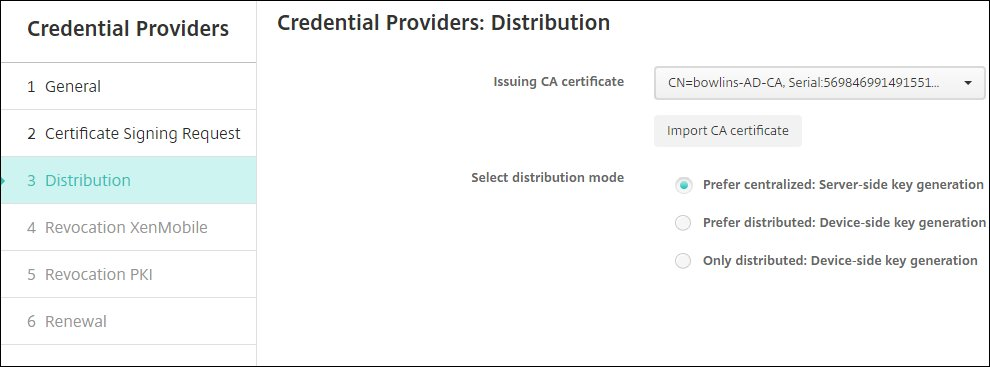
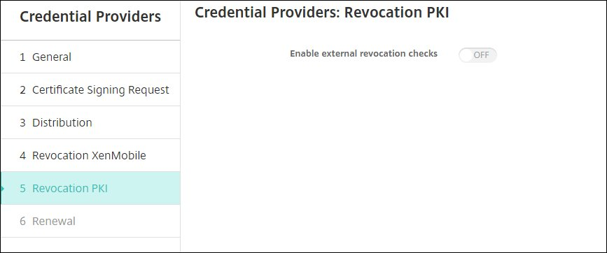
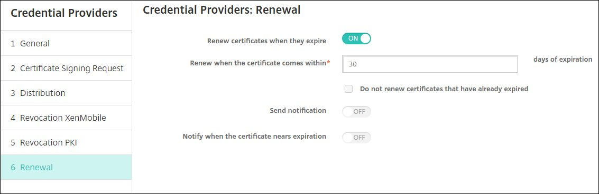
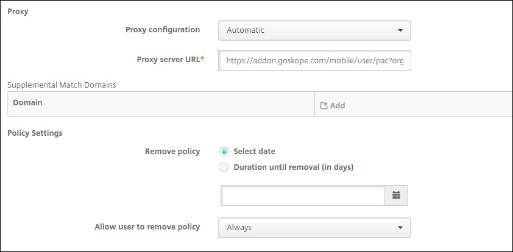

Configure XenMobile for iOS On-Demand VPN
To configure XenMobile for iOS on-demand VPN:
Log in to your XenMobile account (https://xms.bowlins.com:4443). Under Certificate Management, go to Settings > PKI Entities, click Add, and then select Microsoft Certificate Services Entity. This will be used during the new Credential Provider setup later in this procedure.

For General Information, enter these parameters:
Name: Enter a unique name for this entity.
Web enrollment service root URL: Enter the Root URL for your account. For example,
https://RootCA-URL/certsrv.certnew.cer Page Name: Leave the default setting.
certfnsh.asp: Leave the default setting.
Authentication type:
Client Certificate.SSL client certificate: Import the user certificate that will be used to issue the XenMobile client certificate.
When finished, click Next.
For Templates, click Add, enter the name of the template created when configuring the Microsoft certificate, and then click Save. When finished click Next.
Skip the HTTP Parameters and click Next.
For CA Certificates, select the root CA that corresponds to your environment, which is part of the chain imported from the XenMobile client certificate. If no certificate is present, click Import certificate to add the CA certificate, and then select it. When finished, click Save.
After creating a PKI entity, you need to add a credential provider. Under Certificate Management, go to Settings > Certificate Management > Credentials Providers and click Add to create a new credential provider.

On the General page, enter these parameters:

Name: Enter a unique credential provider name.
Issuing entity: Select the Microsoft Certificate Services Entity you created in step 2.
Issuing method:
Sign.Templates: Select the template you created in step 3.
When finished, click Next.
On the Certificate Signing Request page, enter these parameters:

Key algorithm:
RSAKey size:
2048Signature algorithm:
SHA1withRSASubject name: Enter
CN=$user.mail,emailAddress=$user.mail,OU=<Organization ID from the Netskope UI>,O=Citrix Systems.
When finished, click Next.
On the Distribution page, enter these parameters:
 Issuing CA certificate: Select your certificate from the dropdown list. To import your certificate, click Import CA certificate.
Select distribution mode: Select
Prefer centralized: Server-side key generation.
When finished, click Next.
On the Revocation XenMobile page, enter these parameters:

Revoke issued certificates: None of these options should be enabled.
Send notification:
Off.Revoke certification on PKI:
Off.
When finished, click Next.
On the Revocation PKI page, make sure Enable external revocation checks is
Off. When finished, click Next.
On the Renewal page, enter these parameters:
 Renew certificates when they expire:
On.Renew when the certificate comes within:
30(days of expiration).Send notification:
Off.Notify when the certificate nears expiration:
Off.
When finished, click Save.
Now configure your credentials for Device Policies. Go to Configure > Device Policies and click More to expand the options. Under Security, click Credentials.
Make sure iOS is the only platform selected, and then enter a unique Policy Name.

When finished, click Next.
Enter these parameters:

Credential type:
Credential Provider.Credential provider: Select the Netskope credential provider (you created in step 3 above).
Remove policy:
Select date.Allow user to remove policy:
Always.
When finished, click Assignment in the left panel.
For Choose delivery groups, select
AllUsers.
When finished, click Save.
Now create a VPN policy. Go to Configure > Device Policies, click Add, and then click VPN.
Make sure iOS is the only platform selected, and then enter a unique VPN policy name.

When finished, click Next.
Make sure iOS is the only platform selected, and then enter these parameters:

Connection name: Enter a unique connection name.
Connection type:
IPSec.Server name or IP address: Enter the VPN Server Name from the Create VPN Configuration section in the Netskope UI (Settings > Security Cloud Platform > Netskope Client > MDM Distribution).
User account: Enter an optional user account name.
Authentication type for the connection:
Certificate.Identity credential: Select the Credentials Policy (you created in step 11 above).
Prompt for PIN when connecting:
Off.Enable VPN on demand:
On.Next, enter the On-Demand Rules parameters:

On-Demand Rules:
EvaluateConnection.InterfaceTypeMatch:
Unspecified.
Next, enter the Action Parameters:

ActionParameters:Domains: Add on-demand domains (like
app.box.com).Tip
If you want to add multiple on-demand domains at once instead of adding them one by one, create an XML file with on-demand domains as shown below, and then paste the code in the OnDemandRules:XML content field.
<array> <dict> <key>Action</key> <string>EvaluateConnection</string> <key>ActionParameters</key> <array> <dict> <key>Domains</key> <array> <string>.salesforce.com</string> <string>login.salesforce.com</string> <string>app.box.com</string> </array> <key>RequiredURLStringProbe</key> <string>http://addontemp.dp.local/dlr/mac/x1bgjyzwNbwo2u</string> <key>DomainAction</key> <string>ConnectIfNeeded</string> </dict> </array> </dict> </array>ActionParameters:DomainAction:
ConnectIfNeeded.RequiredURLStringProbe: Enter an HTTP or HTTPS URL to probe.
Next, add the Proxy parameters:
 Proxy configuration:
Automatic.Proxy server URL: Enter the PAC URL from the Create VPN Configuration section in the Netskope UI (Settings > Security Cloud Platform > Netskope Client > MDM Distribution).
Remove policy:
Select date.Allow user to remove policy:
Always.
Click Assignment in the left panel, and enter these parameters:
Choose delivery groups:
AllUsers.Expand the Deployment Schedule section to see these options.

Deploy:
OnDeployment schedule:
Now.Deployment condition:
On every connection.Deploy for always-on connections:
On.
When finished, click Save.
The configuration for XenMobile on-demand VPN is complete. Install the Citrix Secure Hub iOS App on your device, and then after that you can perform the server login, user login, and so on to register the device. Refer to the Citrix product documentation for more information.